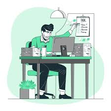

Importanța planificării
O planificare eficientă te ajută să îți gestionezi mai bine timpul și să fii mai productiv. Planificarea zilnică te ajută să îți structurezi ziua, să îți prioritizezi sarcinile și să te concentrezi pe obiectivele importante.

Aici vei găsi sfaturi utile pentru o organizare mai bună a zilei tale și pentru a rămâne pe drumul cel bun în atingerea obiectivelor.